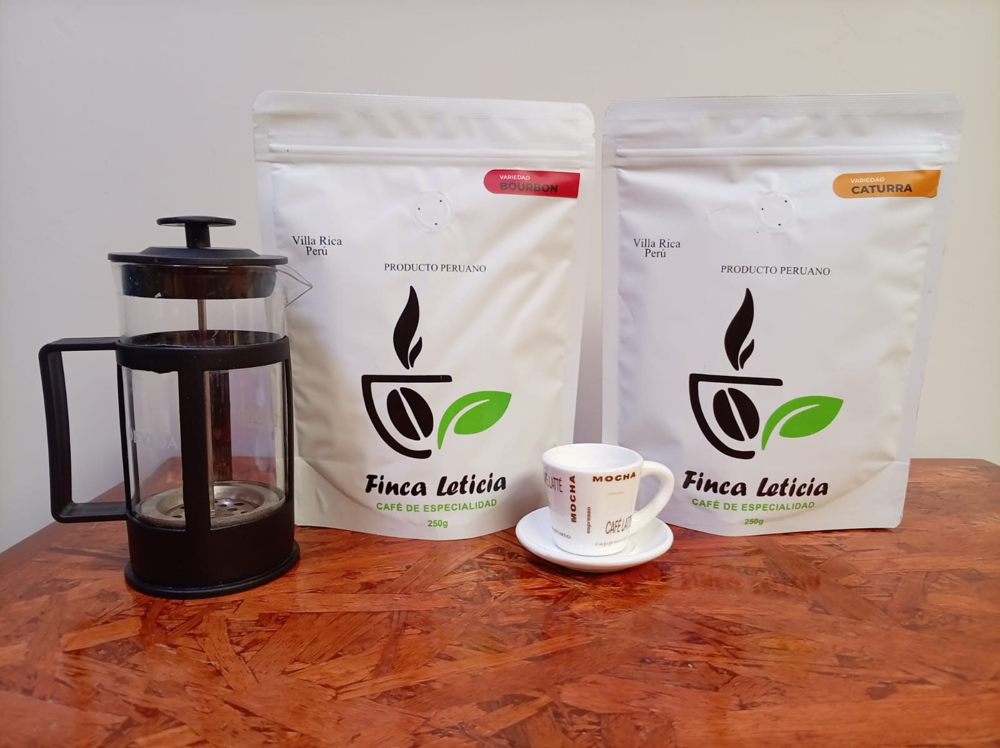
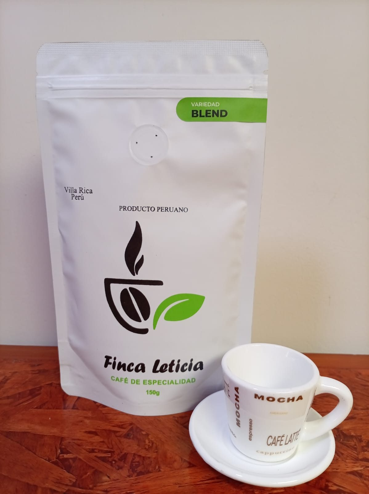
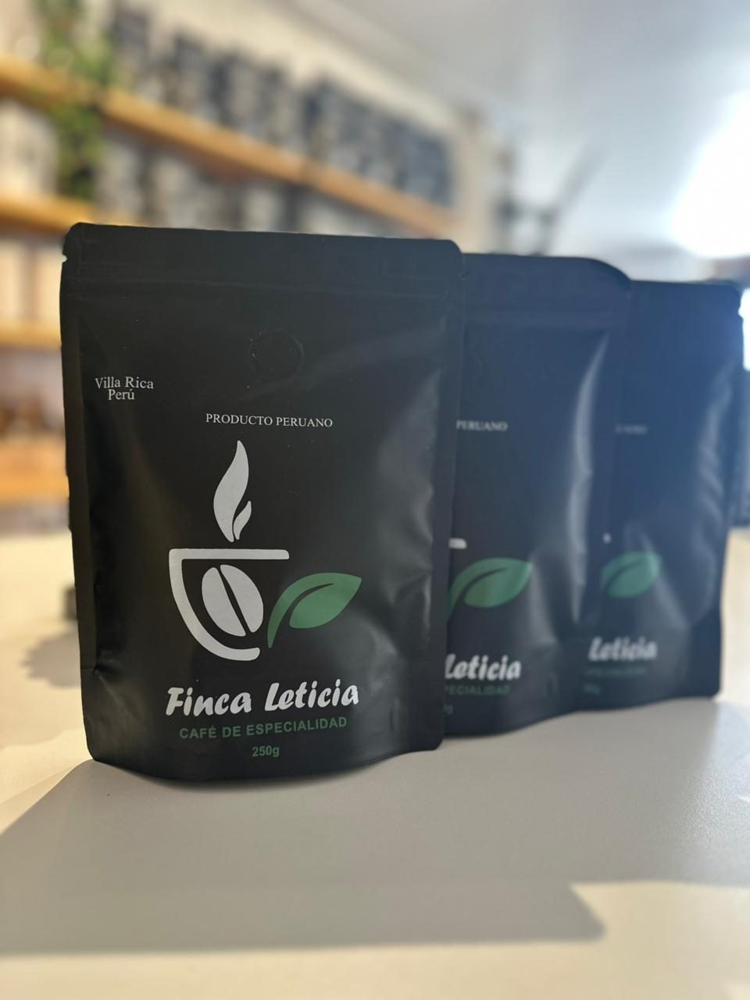
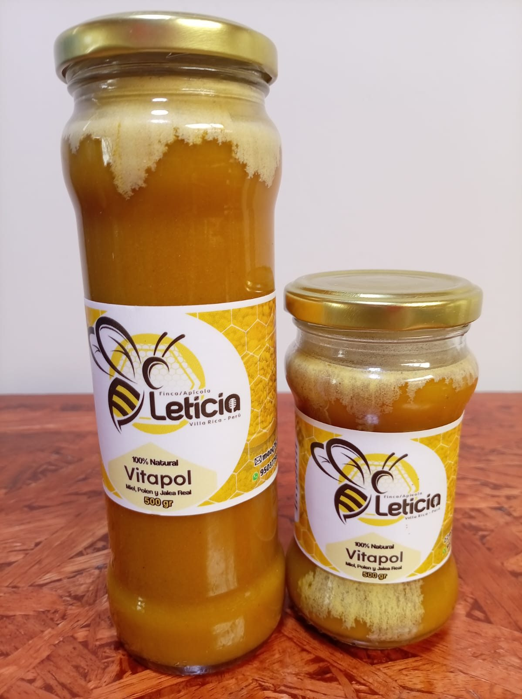
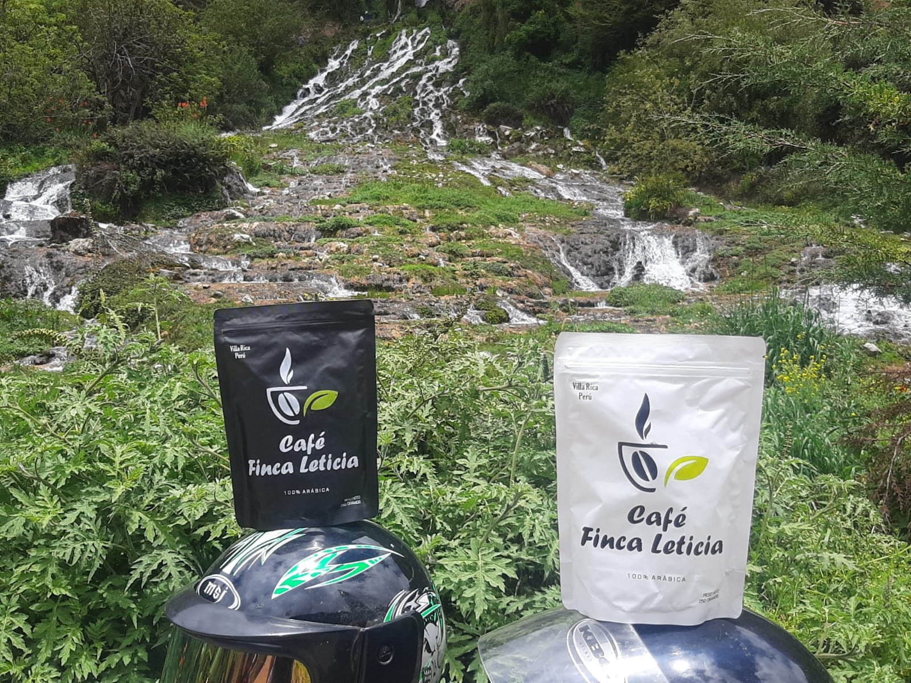
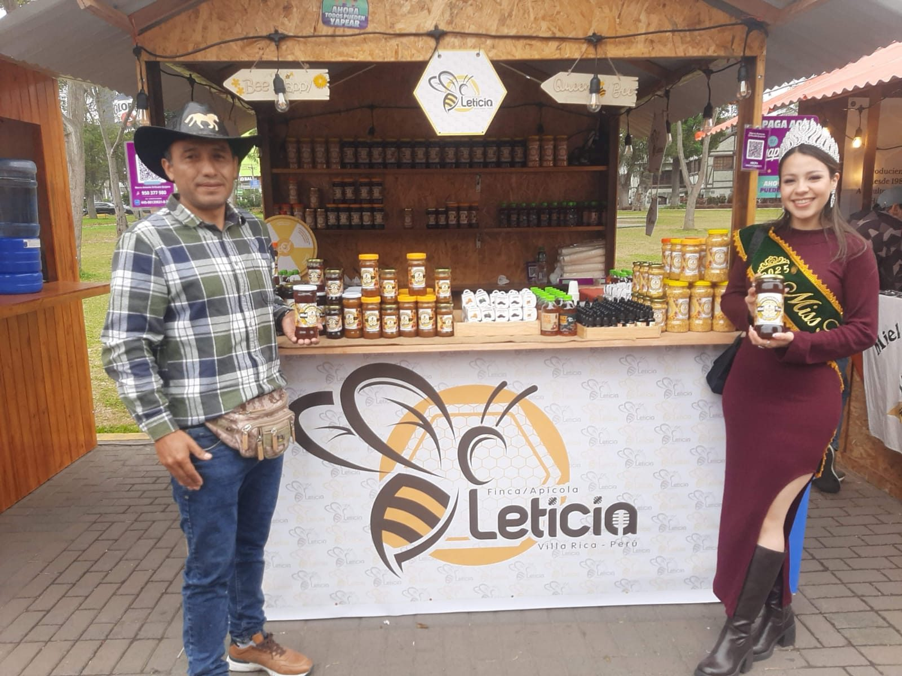

Variedades Geysha, Caturra y Bourbon producidas en Villa Rica.
Villa Rica · Oxapampa · Pasco
Origen que se siente en cada taza.
Café de especialidad y miel natural producidos en Finca Leticia. Conoce nuestras variedades Geysha, Caturra y Bourbon y compra directamente desde la web.
Nuestra propuesta
Del campo a tu mesa
Una tienda construida alrededor del origen, la producción y la compra directa. El cliente puede conocer el producto, añadirlo al carrito y generar su pedido para contra entrega.
Una línea propia de miel de la finca, integrada al catálogo de productos.
El cliente completa sus datos y coordina la entrega directamente con Finca Leticia.
Tienda
Productos destacados





Nuestra finca
Finca Leticia, Villa Rica
Estamos en el distrito de Villa Rica, provincia de Oxapampa, región Pasco. La web busca que el cliente conozca no solo el producto terminado, sino también el origen y la historia detrás de cada café.
Villa RicaDistrito
OxapampaProvincia
PascoRegión
Producción
Del fruto al producto final
Las fotografías reales de la finca ayudan a comunicar cada etapa de manera auténtica.
01
Cosecha
Selección del café en finca.
02
Proceso
Clasificación y preparación de los lotes.
03
Secado
Control del secado antes del tostado.
04
Venta directa
Producto empacado y listo para llegar al cliente.
Compra fácil
Compra en la web y coordina la entrega.
Agrega tus productos al carrito, completa tus datos de entrega y confirma el pedido mediante WhatsApp. La modalidad configurada es contra entrega, por lo que Finca Leticia confirma disponibilidad, precio final y costo de envío antes de despachar.
Ir a la tienda
Contacto
Habla directamente con Finca Leticia
Información comercial y de atención para pedidos y consultas.
Visítanos
Villa Rica
Av. Faustino Sánchez Carrión S/N, Villa Rica, Oxapampa, Pasco.
Referencia: cerca a la capilla del Señor de Los Milagros.
Ubicación
Encuéntranos en Villa Rica
Mapa referencial para llegar a Finca Leticia. La referencia es cerca a la capilla del Señor de Los Milagros.
Finca Leticia
Dirección: Av. Faustino Sánchez Carrión S/N, Villa Rica, Oxapampa, Pasco.
Referencia: cerca a la capilla del Señor de Los Milagros.
Abrir en Google Maps